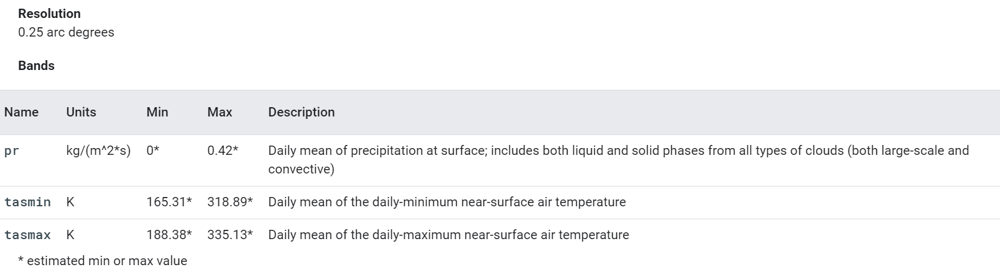
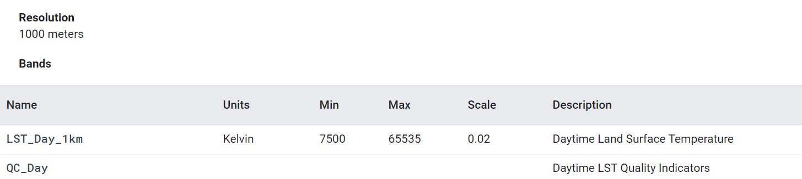

| City | 2018 | 2019 | 2020 |
|---|---|---|---|
| Delhi | 306.97 K | 306.98 K | 307.17 K |
| Mumbai | 306.06 K | 305.92 K | 306.10 K |
| Kolkata | 309.09 K | 309.21 K | 309.22 K |
| Chennai | 307.60 K | 307.67 K | 307.74 K |
Dataset Availability: 1950-01-01T00:00:00 - 2099-12-31T00:00:00
Dataset Provider: NASA / CSU
The NASA NEX-GDDP dataset is comprised of downscaled climate scenarios for the globe that are derived from the General Circulation Model (GCM) runs conducted under the Coupled Model Intercomparison Project Phase 5 (CMIP5, see Taylor et al. 2012) and across two of the four greenhouse gas emissions scenarios known as Representative Concentration Pathways (RCPs, see Meinshausen et al. 2011). The CMIP5 GCM runs were developed in support of the Fifth Assessment Report of the Intergovernmental Panel on Climate Change (IPCC AR5).
This dataset was prepared by the Climate Analytics Group and NASA Ames Research Center using the NASA Earth Exchange, and distributed by the NASA Center for Climate Simulation (NCCS).
| City | Terra | Aqua | ||||
|---|---|---|---|---|---|---|
| 2018 | 2019 | 2020 | 2018 | 2019 | 2020 | |
| Delhi | 306.95 K | 306.46 K | 305.29 K | 310.69 K | 310.15 K | 308.70 K |
| Mumbai | 312.36 K | 311.83 K | 311.28 K | 316.86 K | 317.29 K | 316.39 K |
| Kolkata | 308.73 K | 308.39 K | 311.28 K | 310.43 K | 311.68 K | 314.72 K |
| Chennai | 310.63 K | 310.98 K | 310.72 K | 313.28 K | 314.56 K | 315.05 K |
Dataset Availability: 2002-07-04T00:00:00 - Present
Dataset Provider: NASA LP DAAC at the USGS EROS Center
The MYD11A1 V6 product provides daily land surface temperature (LST) and emissivity values in a 1200 x 1200 kilometer grid. The temperature value is derived from the MOD11_L2 swath product. Above 30 degrees latitude, some pixels may have multiple observations where the criteria for clear-sky are met. When this occurs, the pixel value is the average of all qualifying observations. Provided along with both the day-time and night-time surface temperature bands and their quality indicator layers are MODIS bands 31 and 32 and six observation layers.
Dataset Availability: 2000-03-05T00:00:00 - Present
Dataset Provider: NASA LP DAAC at the USGS EROS Center
The MOD11A1 V6 product provides daily land surface temperature (LST) and emissivity values in a 1200 x 1200 kilometer grid. The temperature value is derived from the MOD11_L2 swath product. Above 30 degrees latitude, some pixels may have multiple observations where the criteria for clear-sky are met. When this occurs, the pixel value is the average of all qualifying observations. Provided along with both the day-time and night-time surface temperature bands and their quality indicator layers are MODIS bands 31 and 32 and six observation layers.
